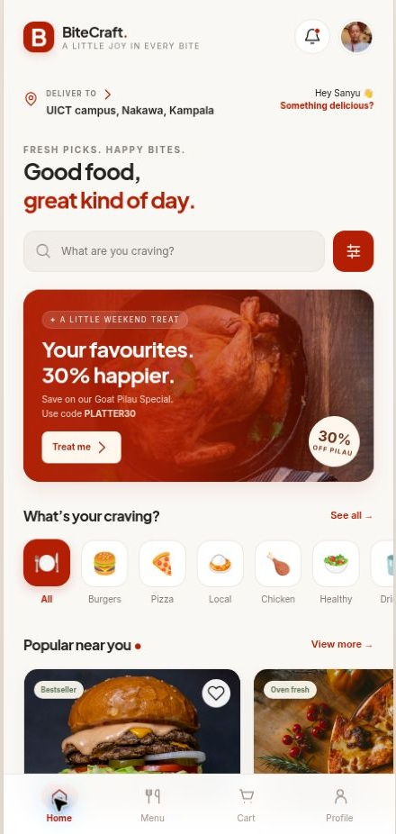
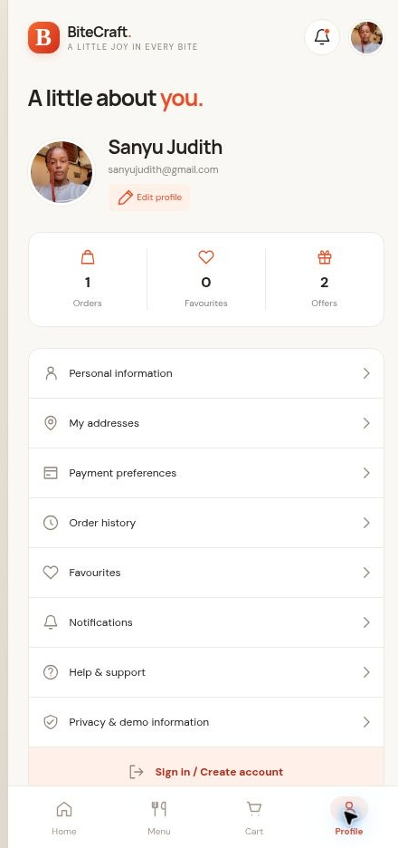
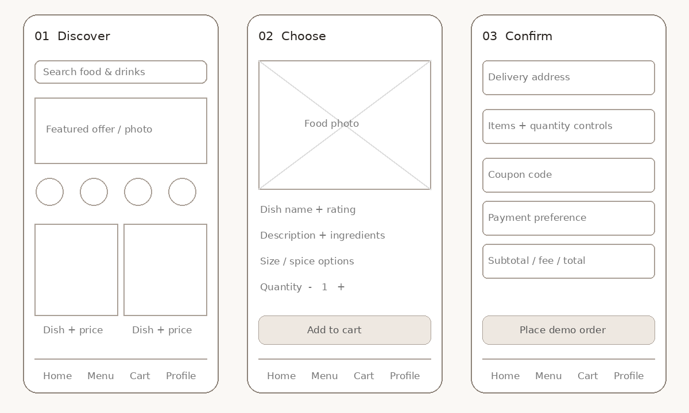
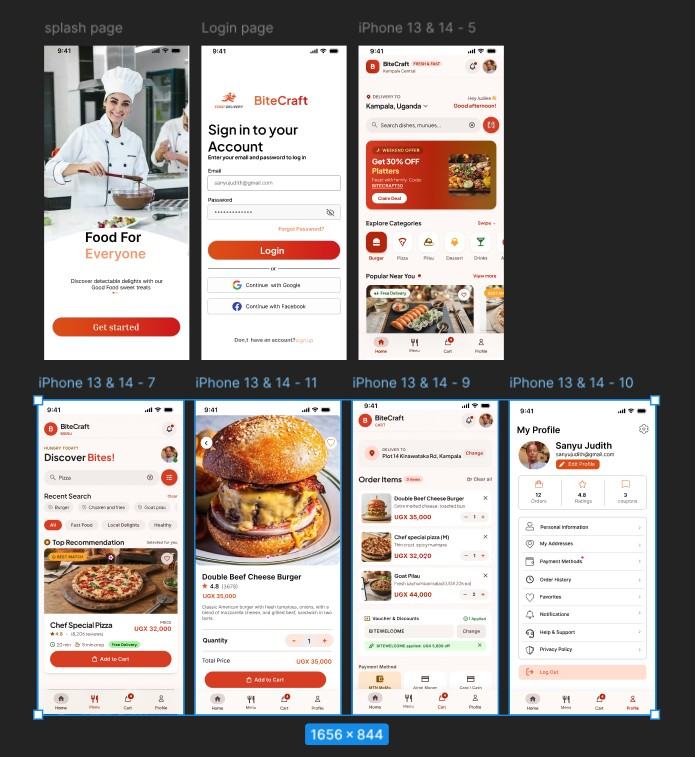
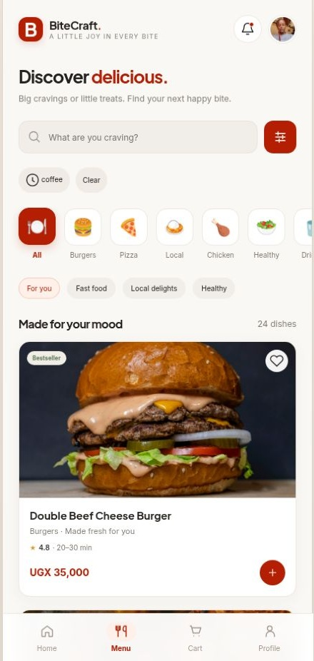
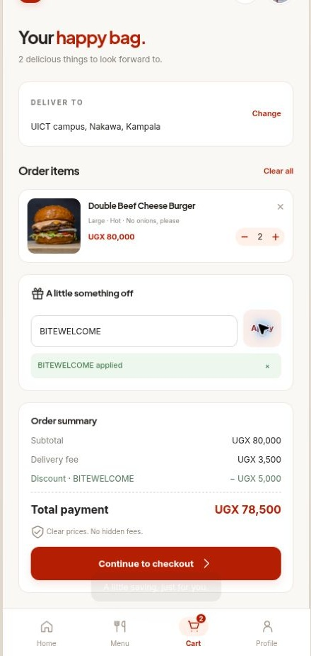
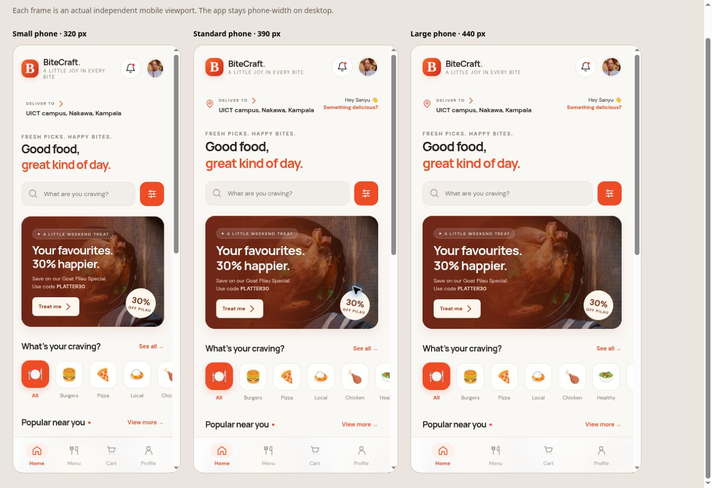

Prepared for Sanyu Judith
Web interface implementation and
documentation
25 October 2026
BiteCraft turns the supplied mobile Figma prototypes into an interactive food-ordering website. It brings food discovery, item customisation, cart review and demo checkout into one consistent phone-style interface.
People choosing a meal need to compare dishes, see prices, customise an order and confirm the final total without losing their place. BiteCraft organises this journey into small, understandable steps.
A working HTML, CSS and JavaScript front end with 41 menu items, eleven food categories, local demo accounts, favourites, saved addresses, offers, checkout, order history and simulated tracking. The app stays at a maximum width of 440 CSS pixels on large screens. Main food lists use one full-width card per row, matching reference B, while the category and popular-food carousels scroll horizontally.


Scope: This is an academic browser demo. It does not collect payments, dispatch food or provide production authentication. Menu prices, ratings and offers are sample content.
Primary audience: students and young adults browsing for affordable meals and drinks on a phone. Secondary audience: busy people who want familiar meals, clear prices and a quick delivery or pickup choice. These are design assumptions, not verified interview findings.
| Assumed need | Interface response |
|---|---|
| Find something quickly | Search, categories, food-type filters and recent searches. |
| Stay within a budget | UGX prices, price sorting, budget filters and an itemised total. |
| Avoid ordering mistakes | Descriptions, allergen notes, size, spice, quantity and kitchen notes. |
| Return to favourites | Saved dishes, addresses, history and reorder. |
| Understand progress | Confirmation, receipt and an explicitly simulated tracking timeline. |
The supplied assignment brief, three screenshots of Figma prototypes and the Sanyu Judith photograph were reviewed. The prototypes establish the brand, screen sequence, deep-red primary actions, food cards and profile identity. No participant interview, survey dataset or original paper sketches were supplied.
Interview 3-5 intended users. Ask how they choose meals, what price information they need, how they describe delivery locations and what makes them abandon an order. Record the date, method and anonymised notes. Do not invent quotations or participant counts.
Ask each participant to find a drink under UGX 10,000, customise a burger, apply a coupon, change an address and place a demo order. Note completion, errors, assistance needed and one suggested improvement. Obtain consent before collecting personal information.
Research status: Requirements analysis is complete. Primary research findings remain for Sanyu Judith to add from work actually conducted.
The interface follows a progressive journey: discover a meal, inspect it, customise it, review the bag, enter checkout details, and see confirmation. A persistent four-tab navigation supports Home, Menu, Cart and Profile.

| Idea | Reason for selecting it |
|---|---|
| Phone-width layout everywhere | Preserves the mobile design and a manageable reading width on desktop. |
| Browse before signing in | Allows the ordering journey to be demonstrated without an account. |
| Separate cart and checkout | Gives users a clear place to verify quantities and totals. |
| One primary action per step | Makes the next action visible and predictable. |
| Profile photo controlled in Settings | Every account starts with Sanyu’s image; users may replace or restore it. |
A wide desktop catalogue was unnecessary for this brief. The selected layout retains the mobile structure while horizontal category and popular-item rows provide additional browsing space.
Submission note: Attach the original paper sketches if the course requires them. The digital wireframes in this report must not be presented as evidence of a paper-sketch process.
The supplied Figma screenshots are the design source. The implementation retains the BiteCraft name, deep-red primary actions, warm neutral surfaces, photo-led food browsing, bottom navigation and Sanyu Judith profile. Additional screens complete the interactions beyond the static prototypes.

| Design element | Implementation |
|---|---|
| Brand colour | Primary #B41F04 for actions, active states and brand accents. |
| Type | Plus Jakarta Sans headings and Inter body text, with system fallbacks. |
| Surfaces | Warm #FAF8F5 canvas, white cards, subtle borders and soft shadows. |
| Spacing | Consistent 22px content gutters; smaller gutters on narrow phones. |
| Navigation | Four persistent tabs; contextual back actions and modal dialogs. |
The editable Figma project is complete according to the supplied brief, but its URL was not provided. Add the actual shareable Figma project link to the final submission. Screenshot evidence is bundled in this repository.


Two Large Double Beef Cheese Burgers cost 2 x (UGX 35,000 + UGX 5,000) = UGX 80,000. BITEWELCOME subtracts UGX 5,000. Delivery adds UGX 3,500. The confirmed total is UGX 78,500.
BITEWELCOME applies when the subtotal is at least UGX 25,000. PLATTER30 discounts only Chicken Pilau Special items by 30%. One coupon is supported per order; an invalidated coupon is removed after cart changes. Pickup has no delivery fee. A dish marked Free Delivery waives the delivery fee for the order.
Checkout requires a name, phone number, delivery address where applicable, and acknowledgment that the order is a demo. Cash, mobile money and card choices save a preference without requesting real payment credentials.

Food cards retain the Figma information layout: name and price share a row, rating and review count follow, timing and delivery details sit above a full-width Add to Cart button. The site uses max-width: 440px with a full-width layout below that size. Desktop space forms a quiet background around the phone-width app. Menu, recommendation and favourite lists show one full-width photo card per row, as in reference B. Categories and popular dishes scroll horizontally inside the app; the page itself has no horizontal overflow in the checked frames.
Buttons have descriptive labels. Inputs have labels and native validation. Dialogs use the browser’s modal focus behaviour. The site includes a skip link, visible keyboard focus, a live status region for feedback, active navigation states, reduced-motion support and meaningful image descriptions.
Layout was inspected in browser frames and on a 1363px desktop viewport, not on physical phones. This is not a full accessibility audit. Local account hashing requires HTTPS or localhost; its logic was tested using Node Web Crypto because the remote preview uses HTTP.
| File / component | Responsibility |
|---|---|
| index.html | Semantic application shell, dialog, navigation and live status region. |
| styles.css | Mobile shell, layouts, components, responsive and reduced-motion rules. |
| app.js | Catalogue, route rendering, event handlers, account state and pricing rules. |
| assets/ | Personal Sanyu image and favicon; food photos use external URLs. |
| tests/ | Pricing, filtering, account isolation and responsive check fixture. |
| vercel.json | Static deployment settings and basic response headers. |
Local storage separates guest data from each account’s profile, addresses, cart, favourites and orders. New accounts inherit Sanyu’s photograph. Settings accepts JPG, PNG and WebP images up to 5MB, resizes them locally and can restore the default. Passwords are derived with PBKDF2-SHA256, 100,000 iterations and a random 16-byte salt.
Production boundary: Browser storage can be inspected and modified locally. A real launch would need server authentication, database-backed order ownership, server-side prices, a payment integration and restaurant fulfilment.
Coverage: unique catalogue IDs and categories; size/quantity/delivery totals; coupon threshold; eligible-item discount; free-delivery order eligibility; combined search and filters; HTML escaping; default photo and account/cart isolation; incorrect-password and duplicate-email rejection; non-secure-preview cart ID fallback.
Burger customisation and live totals; kitchen-note persistence; cart and coupon; simulated mobile-money checkout; saved order and tracking progression; address creation; coffee search; budget/price filters; profile; and responsive frame inspection. The HTTP preview UUID issue was found and fixed.
Run npm test and npm run check from the repository root. Tests use Node built-ins and need no package installation.
1. Open the welcome screen and browse as Sanyu Judith.
2. Search
for a drink and compare the price or budget filter.
3. Open a
burger, select Large and Hot, add a kitchen note and choose quantity
two.
4. Open the cart, enter BITEWELCOME and explain the UGX 78,500
total.
5. Choose delivery or pickup, complete the form and place a
demo order.
6. Show the receipt and advance the simulated tracking
timeline.
7. Open Profile, demonstrate addresses, favourites and
Settings.
8. On HTTPS, create a local demo account and show that
Sanyu’s photo is still the default.
Import abarintuma/bite-craft. Use framework preset Other, repository root as the root directory, no build command and the repository root as the output directory. Deploy the static files. Use the HTTPS deployment URL when demonstrating account creation.
| Submission item | Status |
|---|---|
| HTML, CSS and JavaScript source | Included in the repository. |
| Working front-end demonstration | Included; deploy the repository on Vercel. |
| Illustrated report | HTML and PDF included with supplied and live screenshots. |
| Figma design evidence | Provided screenshots included. Add the actual Figma project URL. |
| Paper sketches | Add original paper sketches if required. Digital reconstruction included. |
| User research findings | Add only findings from interviews or surveys actually conducted. |
Assignment brief and Figma screenshots: supplied by the project owner. Default photograph: supplied Sanyu Judith image, included as requested. Food and kitchen photos load from external Unsplash and Wikimedia Commons URLs. Creators, licences and image URLs are listed in docs/ASSET-CREDITS.md and docs/photo-credits.html. Product names, ratings, costs and delivery progression are demonstration content.
Repository: github.com/abarintuma/bite-craft
Project identity:
Sanyu Judith / BiteCraft